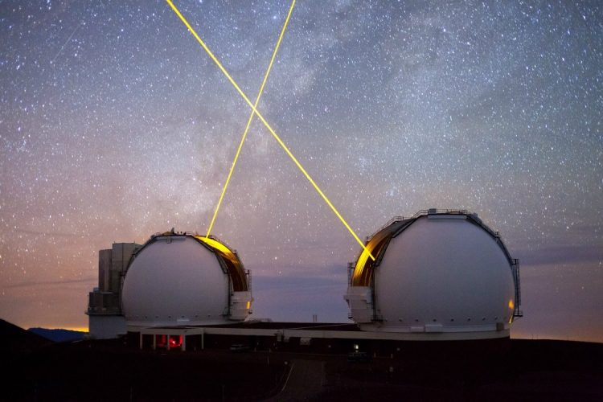

ОБСЕРВАТОРИЯ КЕКА
1996
Расположенная на пике горы Мауна-Кеа (4145 метров над уровнем моря), на острове Гавайи, США. Телескопы обсерватории были крупнейшими в мире с 1993 по 2007 год, до введения в строй Большого канарского телескопа GTC (10,4 м).
Имеют возможность работать в режиме астрономического интерферометра, для увеличения разрешающей способности. Оснащены активной и адаптивной оптикой. Астроклимат обсерватории — один из лучших в мире.
Наибольшее количество экзопланет открыто именно в этой обсерватории с помощью спектрометра высокого разрешения
В обсерватории Кека находятся два зеркальных телескопа, эквивалентный диаметр шестиугольных первичных зеркал составляет 10 метров. Каждое зеркало составлено из 36 малых шестиугольных зеркал. Эти телескопы входят в число крупнейших в мире.